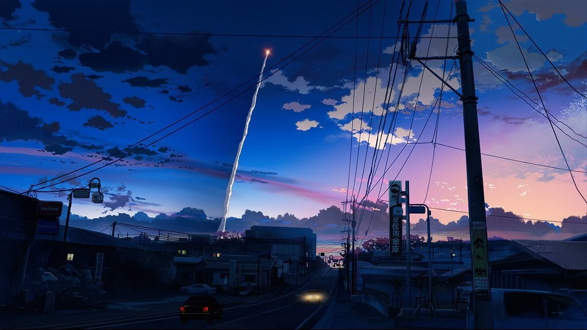

Mark L. Dela Cruz
5 Centimeters per Second: An Unfinished Masterpiece
“Do you know the speed at which cherry blossoms fall? 5 centimeters per second…
At what speed must I live, to be able to see you again?”
Have you ever experienced long distance relationships? This movie hit me to the core. This, for me, is quite probably one of the most touching anime that I have ever seen and one of the most heartfelt pieces of cinema that I have ever experienced.
What happens when two people love each other but just aren’t meant to be together? Takaki Toono and Akari Shinohara are childhood friends, but circumstances beyond their control tear them apart. They promise to stay in contact, and although the progression of time widens the distance between them, the chain of memories remains ever-present.
Byousoku 5 Centimeter is a romantic drama that focuses on the mundane and harsh reality of long-distance relationships. Stuck in the past and unable to make any new memories, Takaki and Akari cling to the hope of seeing each other again. They live their everyday lives half-heartedly, both hurting themselves and the people around them.
Basically, 5 centimeters Per Second is a short movie split up into 3 episodes, the first one being 30 min, the second one 20 min, and the last one 15 min. Each of these three episodes portrays a pair of people and their relationships during childhood, adolescence, and adulthood. The story that it has is very simple and could be summarized in a few sentences but that is not the point of this series. The real point is the volumes of material that could be written about the emotion, feeling, and beauty that can be found in this masterpiece.
Beautiful artwork and animation aside, one of the defining features of Makoto Shinkai’s 5 Centimeters Per Second is its music, and within the soundtrack, “One More Time, One More Chance” stands out for being such a fitting song because it brings to light the sorrows, regrets, and frustrations that the main character, Takaki, experiences over the course of the movie.
As you watch this, you will be able to distinctly feel for these characters and you will be able to connect with them as if you knew them because of how human and relatable they feel. You will be able to feel the same as they do because in your childhood you will have felt precisely the same at some point and this connection comes through wonderfully. Only adding to this sense of wonder is what might be some of the better pacings in a series to date. Simply the way the characters progress and the way that it seemingly ends as soon as it starts will haunt you for hours or days afterward. What strongly supports this anime is the excellent animation which is stunning and the music, which while not jaw-droppingly amazing, still does not leave anything to be desired. In short, do yourself a favor, and take an hour out of your day to watch this beautiful work of art.